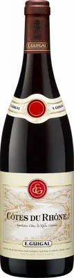

E. Guigal
Côtes du Rhône Rouge
Côtes du Rhône AOC · rosso
Selezione in aggiornamento, in attesa della lista definitiva del titolare: questo vino è un esempio documentato, non ancora una bottiglia confermata della Cave.

Provenienza
- Denominazione
- Côtes du Rhône AOC
- Produttore
- E. Guigal
- Zona
- Côtes du Rhône · Valle del Rodano, Francia
- Uve
- Syrah 50%, Grenache 40%, Mourvèdre 10%
- Annata
- Scheda consultata: annata 2020. Annata in cantina: da confermare.
Secondo le fonti
- Uvaggio
- Proporzioni della scheda dell’annata 2020: cambiano da un’annata all’altra [1]
- Terreni
- Sedimentari, calcarei e granitici, con ciottoli e depositi alluvionali [1]
- Vigne
- Età media 35 anni [1]
- Vinificazione
- Macerazione lunga in acciaio, follature due volte al giorno [1]
- Affinamento
- 24–30 mesi in legno neutro [1]
La nota del bancone
Ancora da scrivere. Le impressioni di assaggio arriveranno da Antoine: qui non inventiamo note a suo nome.
Disponibilità
Da confermare. Non vendiamo online e questa pagina non dice ancora cosa c’è in cantina: per saperlo, e per il prezzo, chiedi ad Antoine.
Una telefonata non è una prenotazione confermata.
Fonti
- Vintus, Scheda tecnica dell’importatore statunitense, annata 2020 (PDF, in inglese): apri la fonte. Consultata il 22 settembre 2026.
- E. Guigal, Sito del produttore: apri la fonte. Consultata il 22 settembre 2026.
Etichetta e immagini ufficiali: pagina dell’importatore. Nomi e marchi appartengono al produttore.